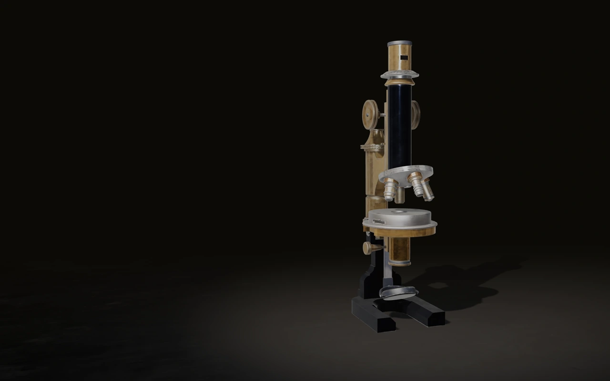
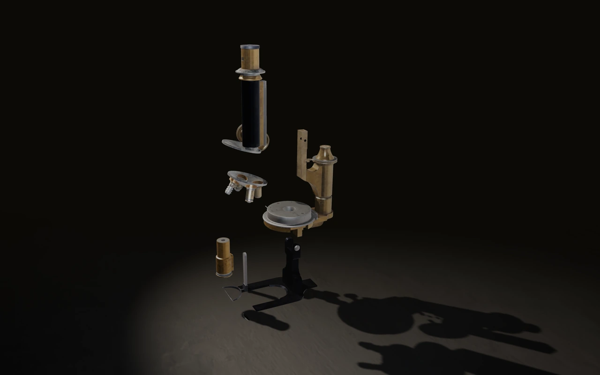

HALE
The only instrument we make.
Machined in Sheffield since 1974. Six revisions in fifty-two years, and no model years. If you own one, we still stock every part of it.
Six revisions. Fifty‑two years.
- 1974 · No. 1
First run, forty units. Cast base, drawn brass tube.
- 1981 · No. 2
Rack‑and‑pinion coarse focus replaced the sliding tube.
- 1989 · No. 3
Condenser added. The mirror stayed, because the mirror was right.
- 1997 · No. 4
Objective revolver machined from one billet instead of three.
- 2008 · No. 5
Fine‑focus thread re‑cut to 0.2 mm per turn.
- 2019 · No. 6
Nothing. We re‑cut the base casting and stopped.

- 01Eyepiece
- 02Objective revolver
- 03Focus adjustment
- 04Rack mount support
- 05Condenser
- 06Mirror arm
- 07Mirror base
- 08Base casting
Eight parts. Every one of them stocked.
The oldest instrument we have refitted was built in 1976. It needed a condenser and two screws. Scroll to take this one apart.
Specification
Hale No. 6 · serial 0001 to present- Height, assembled
- 312 mm
- Mass
- 4.1 kg
- Tube length
- 160 mm
- Objectives
- ×4 ×10 ×40
- Coarse focus
- rack and pinion
- Fine focus
- 0.2 mm / turn
- Stage, cast
- 120 × 120 mm
- Base
- grey iron, 2.6 kg
- Finish
- lacquered brass, unplated
- Illumination
- plane mirror, two faces
Guaranteed for as long as this company exists, and after that for as long as the parts do. We hold every component back to 1974, including the ones we stopped fitting in 1981.
One thousand two hundred people own one.
-
1979 · no. 0114Aberdeen
Bought by a school. Used by roughly nine thousand children. Returned to us in 2011 for a new mirror, and for nothing else.
-
1994 · no. 0642Kyoto
Bought by a lichenologist who has photographed through it every week for thirty-one years. She has never sent it back.
-
2021 · no. 1188Bergen
Bought for a fourteen-year-old. It is the newest one on this page and it will outlive everyone reading it.
£2,400. One a week.
We finish one instrument every week and the list is about nine months long. When your serial number is cut you will be told which week it happened in. Nothing is taken from you until then.
Join the list